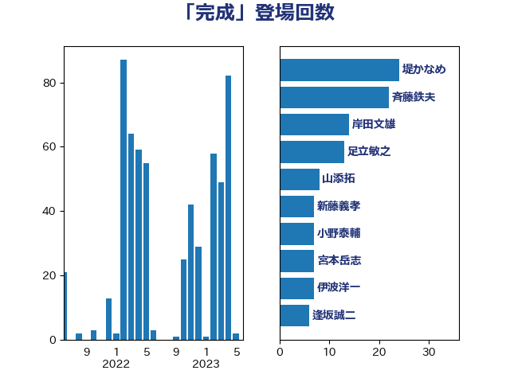

単語「完成」

| 堤かなめ | 立憲民主党 | 24 回 |
| 斉藤鉄夫 | 公明党 | 22 回 |
| 岸田文雄 | 自由民主党 | 14 回 |
| 足立敏之 | 自由民主党 | 13 回 |
| 山添拓 | 日本共産党 | 8 回 |
| 新藤義孝 | 自由民主党 | 7 回 |
| 小野泰輔 | 日本維新の会 | 7 回 |
| 宮本岳志 | 日本共産党 | 7 回 |
| 伊波洋一 | 無所属 | 7 回 |
| 逢坂誠二 | 立憲民主党 | 6 回 |
| 芳賀道也 | 国民民主党 | 6 回 |
| 浜田靖一 | 自由民主党 | 6 回 |
| 浜地雅一 | 公明党 | 6 回 |
| 高橋千鶴子 | 日本共産党 | 5 回 |
| 金城泰邦 | 公明党 | 5 回 |
| 西銘恒三郎 | 自由民主党 | 5 回 |
| 萩生田光一 | 自由民主党 | 5 回 |
| 紙智子 | 日本共産党 | 5 回 |
| 石井苗子 | 日本維新の会 | 5 回 |
| 河野太郎 | 自由民主党 | 5 回 |
| 山口壯 | 自由民主党 | 5 回 |
| 大西健介 | 立憲民主党 | 5 回 |
| 野田国義 | 立憲民主党 | 4 回 |
| 足立康史 | 日本維新の会 | 4 回 |
| 蓮舫 | 立憲民主党 | 4 回 |
| 滝波宏文 | 自由民主党 | 4 回 |
| 柴田巧 | 日本維新の会 | 4 回 |
| 末松信介 | 自由民主党 | 4 回 |
| 山崎正恭 | 公明党 | 4 回 |
| 尾崎正直 | 自由民主党 | 4 回 |
| 安江伸夫 | 公明党 | 4 回 |
| 奥野総一郎 | 立憲民主党 | 4 回 |
| 大野泰正 | 自由民主党 | 4 回 |
| 高市早苗 | 自由民主党 | 3 回 |
| 音喜多駿 | 日本維新の会 | 3 回 |
| 青柳仁士 | 日本維新の会 | 3 回 |
| 青木愛 | 立憲民主党 | 3 回 |
| 鈴木敦 | 国民民主党 | 3 回 |
| 西村康稔 | 自由民主党 | 3 回 |
| 美延映夫 | 日本維新の会 | 3 回 |
| 篠原豪 | 立憲民主党 | 3 回 |
| 穀田恵二 | 日本共産党 | 3 回 |
| 田村智子 | 日本共産党 | 3 回 |
| 渡辺博道 | 自由民主党 | 3 回 |
| 櫛渕万里 | れいわ新選組 | 3 回 |
| 新垣邦男 | 立憲民主党 | 3 回 |
| 平木大作 | 公明党 | 3 回 |
| 山崎誠 | 立憲民主党 | 3 回 |
| 塩崎彰久 | 自由民主党 | 3 回 |
| 城井崇 | 立憲民主党 | 3 回 |
| 加藤勝信 | 自由民主党 | 3 回 |
| 前川清成 | 日本維新の会 | 3 回 |
| 三浦信祐 | 公明党 | 3 回 |
| 一谷勇一郎 | 日本維新の会 | 3 回 |
| 青山繁晴 | 自由民主党 | 2 回 |
| 鈴木義弘 | 国民民主党 | 2 回 |
| 重徳和彦 | 立憲民主党 | 2 回 |
| 赤池誠章 | 自由民主党 | 2 回 |
| 菅直人 | 立憲民主党 | 2 回 |
| 舩後靖彦 | れいわ新選組 | 2 回 |
| 福田昭夫 | 立憲民主党 | 2 回 |
| 田村まみ | 国民民主党 | 2 回 |
| 田中健 | 国民民主党 | 2 回 |
| 猪口邦子 | 自由民主党 | 2 回 |
| 熊谷裕人 | 立憲民主党 | 2 回 |
| 熊田裕通 | 自由民主党 | 2 回 |
| 深澤陽一 | 自由民主党 | 2 回 |
| 水岡俊一 | 立憲民主党 | 2 回 |
| 柴山昌彦 | 自由民主党 | 2 回 |
| 本庄知史 | 立憲民主党 | 2 回 |
| 斎藤アレックス | 国民民主党 | 2 回 |
| 徳永エリ | 立憲民主党 | 2 回 |
| 岸真紀子 | 立憲民主党 | 2 回 |
| 山岸一生 | 立憲民主党 | 2 回 |
| 山井和則 | 立憲民主党 | 2 回 |
| 山下貴司 | 自由民主党 | 2 回 |
| 小熊慎司 | 立憲民主党 | 2 回 |
| 寺田稔 | 自由民主党 | 2 回 |
| 大島敦 | 立憲民主党 | 2 回 |
| 大口善徳 | 公明党 | 2 回 |
| 吉良州司 | 無所属 | 2 回 |
| 務台俊介 | 自由民主党 | 2 回 |
| 佐々木さやか | 公明党 | 2 回 |
| 伴野豊 | 立憲民主党 | 2 回 |
| 今枝宗一郎 | 自由民主党 | 2 回 |
| 井原巧 | 自由民主党 | 2 回 |
| 上田英俊 | 自由民主党 | 2 回 |
| 三浦靖 | 自由民主党 | 2 回 |
| 鰐淵洋子 | 公明党 | 1 回 |
| 高見康裕 | 自由民主党 | 1 回 |
| 高橋光男 | 公明党 | 1 回 |
| 高木かおり | 日本維新の会 | 1 回 |
| 馬場雄基 | 立憲民主党 | 1 回 |
| 青島健太 | 日本維新の会 | 1 回 |
| 階猛 | 立憲民主党 | 1 回 |
| 長友慎治 | 国民民主党 | 1 回 |
| 鈴木英敬 | 自由民主党 | 1 回 |
| 鈴木憲和 | 自由民主党 | 1 回 |
| 野村哲郎 | 自由民主党 | 1 回 |
| 酒井庸行 | 自由民主党 | 1 回 |
| 遠藤良太 | 日本維新の会 | 1 回 |
| 辻清人 | 自由民主党 | 1 回 |
| 辻元清美 | 立憲民主党 | 1 回 |
| 赤羽一嘉 | 公明党 | 1 回 |
| 赤木正幸 | 日本維新の会 | 1 回 |
| 赤嶺政賢 | 日本共産党 | 1 回 |
| 西田昌司 | 自由民主党 | 1 回 |
| 西村智奈美 | 立憲民主党 | 1 回 |
| 西岡秀子 | 国民民主党 | 1 回 |
| 藤巻健太 | 日本維新の会 | 1 回 |
| 落合貴之 | 立憲民主党 | 1 回 |
| 若宮健嗣 | 自由民主党 | 1 回 |
| 舟山康江 | 国民民主党 | 1 回 |
| 羽田次郎 | 立憲民主党 | 1 回 |
| 簗和生 | 自由民主党 | 1 回 |
| 笠井亮 | 日本共産党 | 1 回 |
| 福山哲郎 | 立憲民主党 | 1 回 |
| 神田憲次 | 自由民主党 | 1 回 |
| 石川香織 | 立憲民主党 | 1 回 |
| 石川昭政 | 自由民主党 | 1 回 |
| 石垣のりこ | 立憲民主党 | 1 回 |
| 石原正敬 | 自由民主党 | 1 回 |
| 石井章 | 日本維新の会 | 1 回 |
| 白石洋一 | 立憲民主党 | 1 回 |
| 牧野たかお | 自由民主党 | 1 回 |
| 瀬戸隆一 | 自由民主党 | 1 回 |
| 滝沢求 | 自由民主党 | 1 回 |
| 湯原俊二 | 立憲民主党 | 1 回 |
| 渡辺猛之 | 自由民主党 | 1 回 |
| 浅川義治 | 日本維新の会 | 1 回 |
| 津島淳 | 自由民主党 | 1 回 |
| 永岡桂子 | 自由民主党 | 1 回 |
| 永井学 | 自由民主党 | 1 回 |
| 横沢高徳 | 立憲民主党 | 1 回 |
| 森屋隆 | 立憲民主党 | 1 回 |
| 梅村聡 | 日本維新の会 | 1 回 |
| 梅村みずほ | 日本維新の会 | 1 回 |
| 柘植芳文 | 自由民主党 | 1 回 |
| 枝野幸男 | 立憲民主党 | 1 回 |
| 松野博一 | 自由民主党 | 1 回 |
| 杉本和巳 | 日本維新の会 | 1 回 |
| 杉尾秀哉 | 立憲民主党 | 1 回 |
| 日下正喜 | 公明党 | 1 回 |
| 斎藤嘉隆 | 立憲民主党 | 1 回 |
| 川田龍平 | 立憲民主党 | 1 回 |
| 川崎ひでと | 自由民主党 | 1 回 |
| 岩渕友 | 日本共産党 | 1 回 |
| 岡田直樹 | 自由民主党 | 1 回 |
| 山田勝彦 | 立憲民主党 | 1 回 |
| 山本太郎 | れいわ新選組 | 1 回 |
| 小里泰弘 | 自由民主党 | 1 回 |
| 小沢雅仁 | 立憲民主党 | 1 回 |
| 小池晃 | 日本共産党 | 1 回 |
| 小森卓郎 | 自由民主党 | 1 回 |
| 小林一大 | 自由民主党 | 1 回 |
| 小山展弘 | 立憲民主党 | 1 回 |
| 寺田静 | 無所属 | 1 回 |
| 宮本徹 | 日本共産党 | 1 回 |
| 天畠大輔 | れいわ新選組 | 1 回 |
| 大石あきこ | れいわ新選組 | 1 回 |
| 大岡敏孝 | 自由民主党 | 1 回 |
| 大塚耕平 | 国民民主党 | 1 回 |
| 大串正樹 | 自由民主党 | 1 回 |
| 大串博志 | 立憲民主党 | 1 回 |
| 塩村あやか | 立憲民主党 | 1 回 |
| 堀井巌 | 自由民主党 | 1 回 |
| 土田慎 | 自由民主党 | 1 回 |
| 國場幸之助 | 自由民主党 | 1 回 |
| 和田義明 | 自由民主党 | 1 回 |
| 和田有一朗 | 日本維新の会 | 1 回 |
| 古川直季 | 自由民主党 | 1 回 |
| 古川元久 | 国民民主党 | 1 回 |
| 北神圭朗 | 無所属 | 1 回 |
| 加藤竜祥 | 自由民主党 | 1 回 |
| 八木哲也 | 自由民主党 | 1 回 |
| 佐藤英道 | 公明党 | 1 回 |
| 佐藤啓 | 自由民主党 | 1 回 |
| 住吉寛紀 | 日本維新の会 | 1 回 |
| 伊藤孝恵 | 国民民主党 | 1 回 |
| 伊藤俊輔 | 立憲民主党 | 1 回 |
| 井上哲士 | 日本共産党 | 1 回 |
| 中野洋昌 | 公明党 | 1 回 |
| 中田宏 | 自由民主党 | 1 回 |
| 中根一幸 | 自由民主党 | 1 回 |
| 中村裕之 | 自由民主党 | 1 回 |
| 下野六太 | 公明党 | 1 回 |
| 下村博文 | 自由民主党 | 1 回 |
| 上田勇 | 公明党 | 1 回 |
| あかま二郎 | 自由民主党 | 1 回 |